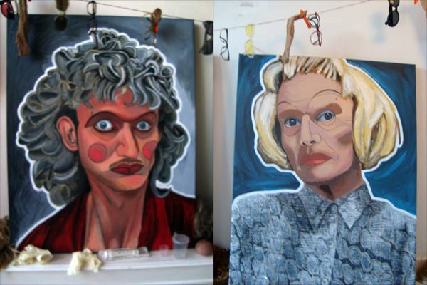
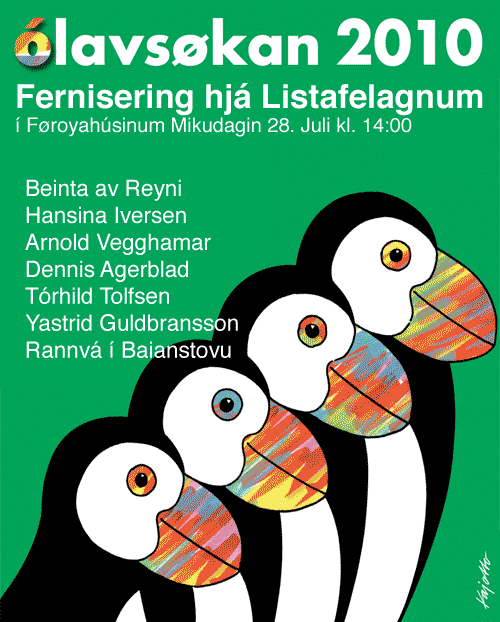
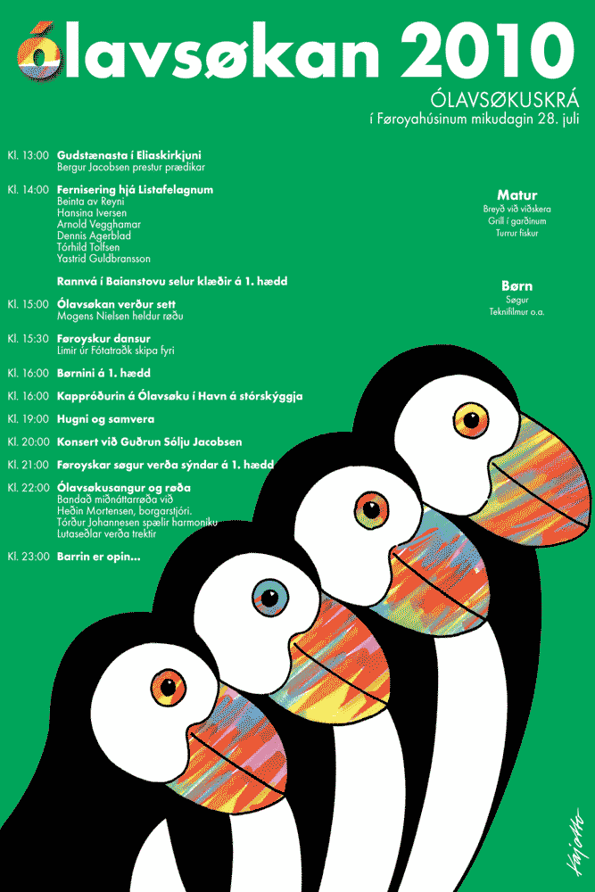

Dennis Agerblad udstiller i det Færøske hus, Vesterbrogade 17A, København.
28/07 - 2010.

Self Portraits

Dennis Agerblad og 6 andre Førøske kunstnere bla.a. hans mor Torhild Tolfsen udstiller mallerier og tøj i forbindelse med den Færøske højtid Ólavsøku.
